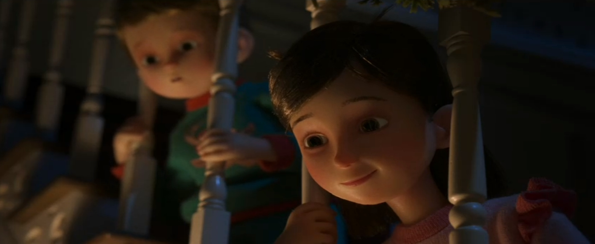
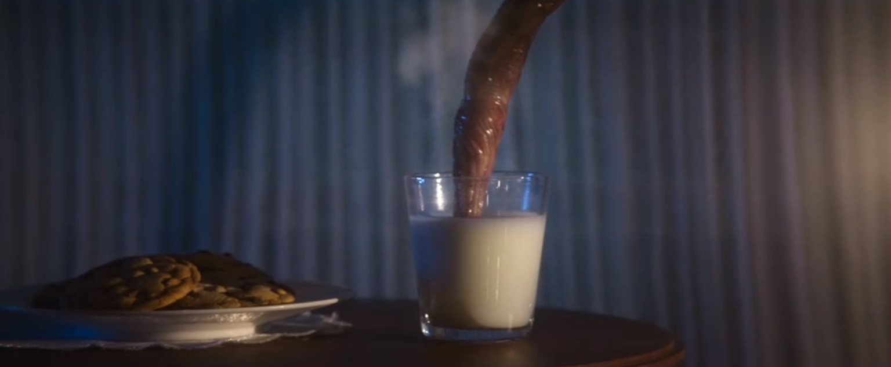
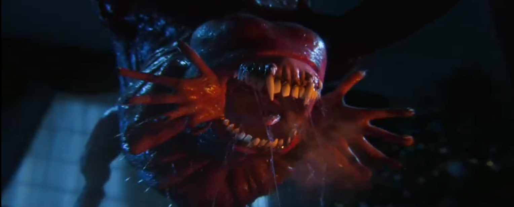

Love Death & Robots é uma série cheia de criaturas aterrorizantes, surpresas bizarras e humor ácido, em cada um dos vários episódios únicos que retraram uma história diferente uma da outra.
O episódio que iremos abordar aqui é um dos mais curtos, cerca de 7 minutos de duração. O episódio chamado "Pela Casa" da segunda temporada, traz uma nova visão a uma história ja conhecida pelo público
A história se inicia com duas crianças, sem seus nomes apresentados, anciosos pelos presentes de natal, cheios do espírito do feriado, impacientes com tempo, querendo logo pegar os seus presentes.
Por mera curiosidade, os dois decidem ir até o andar de baixo, na esperança de encontrarem o papai noel
O que eles menos esperavam era que eles de fato encontraram o papai noel, mas não da exata maneira que esperavam
Cobertos pelo medo, correm para achar um esconderijo, mas o Papai Noel os percebeu e logo foi atrás deles.
Quando finalmente encurrala as crianças, cheira elas e começa a vomitar presentes para elas
Logo então, sobe a chaminé e some de vista. As crianças além de amendrontadas ficam pensativas e se fazem a pergunta
"E se elas fossem crianças mal criadas?" E é ai que chega o final do episódio.
O episódio demonstra uma quebra nos conceitos, pegando algo usado como símbolo de felicidade e festividade como o Papai Noel, e devolvendo como algo aterrorizante, mas que ainda sim remete ao original.
Essa ideia de mudar algo que ja temos ciência para outra totalmente nova e estranha é algo tão simples mas ao mesmo tempo tão interessante
Ela trás um novo ar, e ainda no final faz um questionamento que deixa nós com mais curiosidade ainda
Caso queira ver pessoalmente o episódio e conferir toda a temporada, a série é disponibilizada pela Netflix, clique aqui